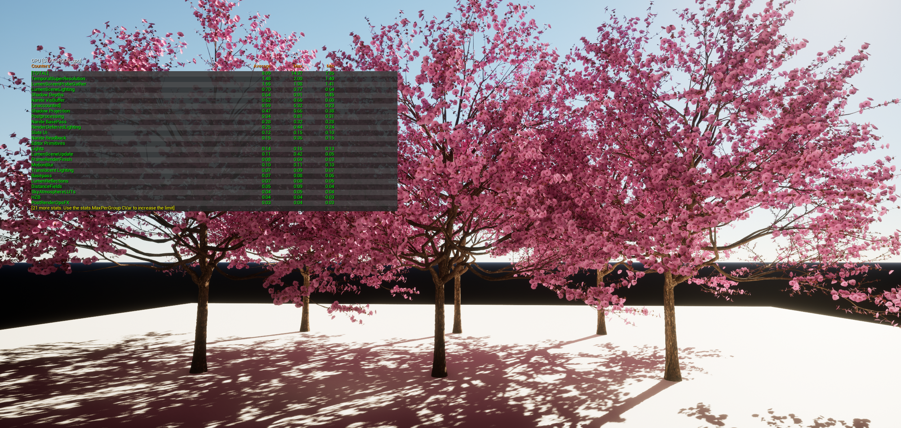

UE5 Profiling & Optimization
Reducing GPU cost in the UE editor and helping artists profile their own work
Cinev Studio · UE5 Editor · Nanite · GPU Profiling · stat gpu
Problem
As production scenes grew more complex, GPU frame times exceeded the 16–20ms target. Artists used different performance checks, making bottlenecks difficult to identify. The team needed profiling procedures and optimization guidelines suited to its workflow after adopting Nanite.
Solution
I organized GPU profiling into five steps and shared the process with the team. I worked through production maps using Nanite mesh splitting, material replacement, and rendering settings informed by Epic’s City Sample, comparing frame time and visual results after each change.
My Role
- Personally profiled, diagnosed, and optimized initial scenes to establish methodology and baseline targets
- Analyzed Epic’s City Sample and documented Nanite configuration guidelines
- Documented profiling in Notion for the environment and lighting teams, establishing a flow from their own checks to TA support
The figures below are GPU frame times measured in the Unreal Engine editor. Each change was compared with the visual result at the same camera position.
Result
| Environment | Technique | Before | After | Gain |
|---|---|---|---|---|
| City environment (5-viewpoint average) | Nanite + global render | 34.18ms | 18.44ms | 46%↓ |
| Industrial Complex | Mesh split (Nanite) | 56ms | 18ms | 68%↓ |
| Cherry Blossom | Custom material | 12.23ms | 8.09ms | 34%↓ |
Case Studies
City environment — Rendering and Nanite settings
35–52% reduction across 4 spots
I adjusted rendering and per-mesh Nanite settings to reduce work on geometry with little contribution to the image. Across five camera positions, average GPU frame time fell from 34.18ms to 18.44ms, a reduction of about 46%. I also checked the tradeoffs: darker shadows and less surface detail. Two comparisons from matching viewpoints are shown below.

Spot 1: 39.26ms → 19.54ms (50%↓) — identical camera angle, stat gpu overlay

Spot 3: 29.03ms → 18.96ms (35%↓) — neon deer sculpture by stream bridge
Industrial Complex — Nanite Mesh Split
68% reduction
A single monolithic mesh prevented Nanite from culling occluded sections, resulting in 56ms frame time. I split the model along natural occlusion boundaries, enabling per-piece culling and proper LOD transitions.

56ms → 18ms (68%↓) — Nanite culling restored after mesh split
Slum Area — Two-Pass Step-by-Step Optimization
Separate logs for the first and second passes
stat gpu identified foliage as a major bottleneck, so I started with vegetation and lighting. I re-measured after changes and documented Nanite, cull-distance, and lighting adjustments. The two passes are separate work logs; the screenshot below shows an intermediate result of 29.73ms. I also considered the visual impact of disabling fill lighting.

Shader complexity view — white areas = extreme GPU cost, confirming foliage and lighting as primary bottlenecks

Before: 36ms

Intermediate capture: GPU average 29.73ms
Cherry Blossom — Material Replacement
34% reduction
External vegetation material used 14 texture samples per pixel with unnecessary subsurface scattering. I replaced it with a custom material that achieved equivalent visual quality with 6 samples. Measured a lights-off baseline (6.84ms) to isolate material cost precisely.
{kind=link}

12.23ms → 8.09ms (34%↓) — lights-off baseline 6.84ms isolating material cost
How I Profile
Profiling initially sat with the TA team. I documented the process in Notion for the environment and lighting teams so they could first inspect light and material types, texture sizes, and polygon counts. When an essential part of the look could not meet the budget, the TA team helped customize it or find a less costly way to achieve the same effect.
- Establish target criteria and capture fixed viewpoints
- Isolate major GPU contributors with stat gpu / GPU Visualizer
- Validate with debug modes: light overlap, shader complexity, Nanite views
- Apply lowest-risk fix while maintaining visual quality
- Re-measure on the same spot and share documented findings
Target Criteria
| Scene ms | Assessment |
|---|---|
| < 15ms | Headroom — can add more content |
| 15–18ms | Ideal range |
| > 18ms | Needs optimization |

Slum area 3-panel composite — wireframe, render, and debug views for bottleneck analysis
Validation
The desert oasis map hit the 15–20ms target across all camera positions.
Desert oasis — 15–20ms target achieved across all camera positions
I assessed each change through both visual comparisons and GPU frame times. Changes with a larger visual impact were checked against the intended look; where needed, the TA team explored alternative treatments or custom materials.